Acquisition, sans le jargon.
Des conseils concrets sur Meta Ads, Google Ads et le SEO.
 SEO
SEO
AI Overviews arrive en France : ce qui change vraiment pour ton SEO
Google affiche ses résumés IA en haut des résultats depuis juillet 2026. Voici l'impact réel sur ton trafic et comment adapter ta stratégie.
Lire l'article → SEO
SEO
Le SEO, c'est quoi (et pourquoi ça compte pour ton business) ?
Le référencement naturel expliqué simplement, sans jargon, pour comprendre comment Google t'amène des clients gratuitement.
Lire l'article →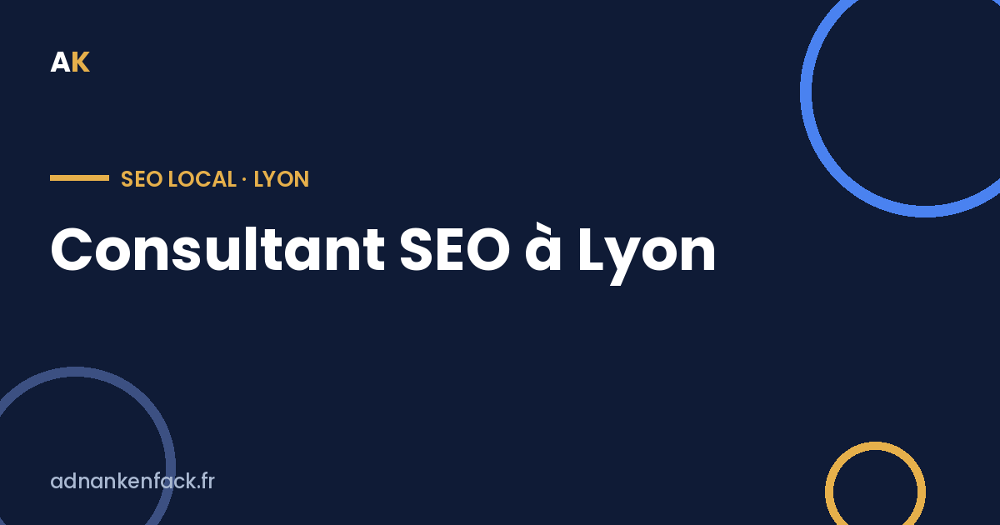
SEO LOCALConsultant SEO à Lyon
Référencement naturel à Lyon : gagne en visibilité sur Google dans l'un des marchés les plus dynamiques de France.
Voir la page →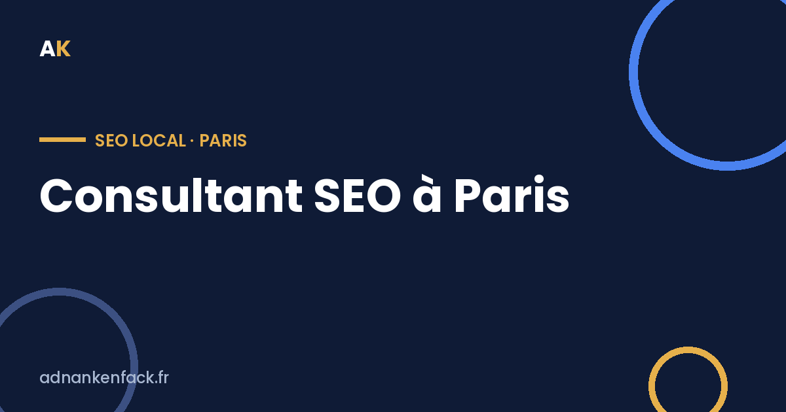
SEO LOCALConsultant SEO à Paris
Référencement naturel à Paris : sortir du lot sur Google dans le marché le plus concurrentiel de France.
Voir la page →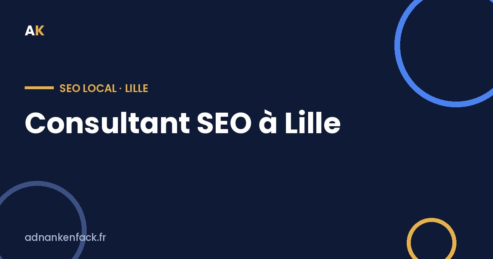
SEO LOCALConsultant SEO à Lille
Référencement naturel à Lille : gagne en visibilité sur Google dans le berceau du e-commerce français.
Voir la page →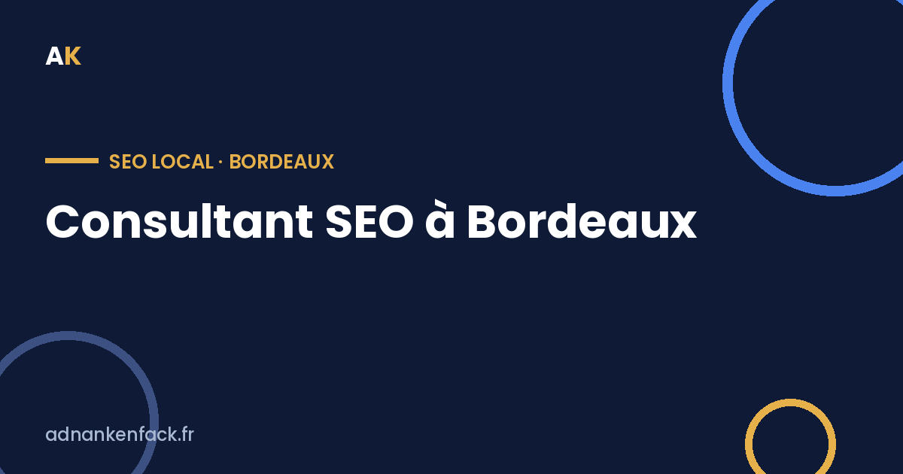
SEO LOCALConsultant SEO à Bordeaux
Référencement naturel à Bordeaux : gagne en visibilité sur Google dans l'une des métropoles qui grandit le plus vite.
Voir la page →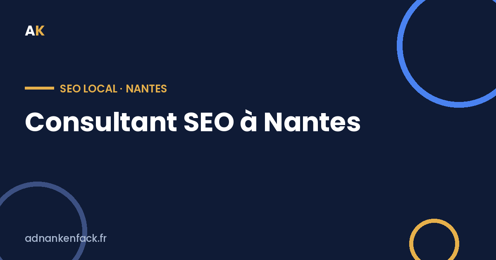
SEO LOCALConsultant SEO à Nantes
Référencement naturel à Nantes : gagne en visibilité sur Google dans l'un des pôles numériques les plus dynamiques de l'Ouest.
Voir la page →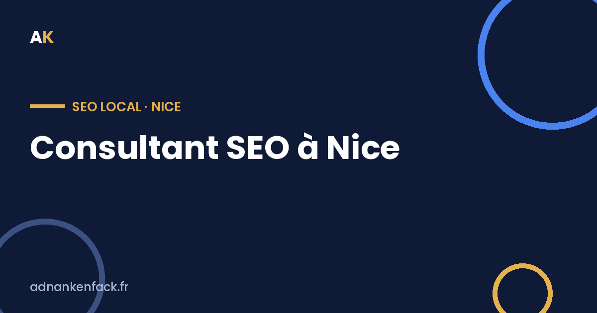
SEO LOCALConsultant SEO à Nice
Référencement naturel à Nice : gagne en visibilité sur Google et les IA sur la Côte d'Azur.
Voir la page →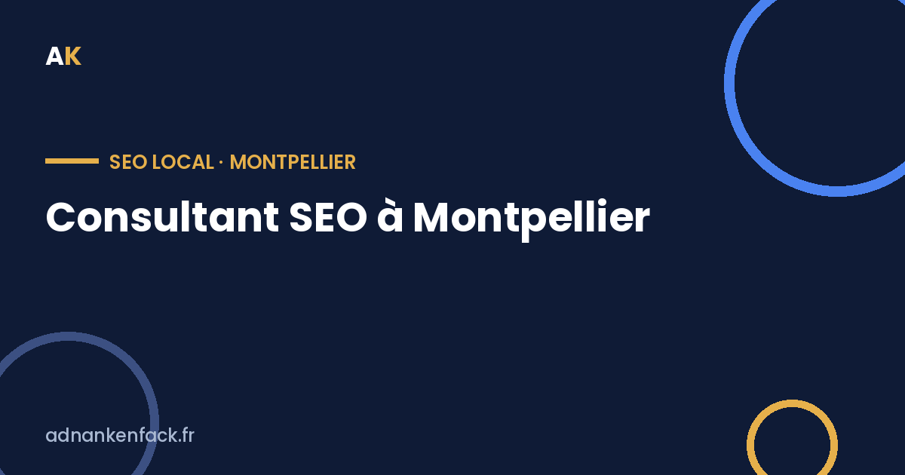
SEO LOCALConsultant SEO à Montpellier
Référencement naturel à Montpellier : gagne en visibilité sur Google dans l'une des villes qui grandit le plus vite.
Voir la page →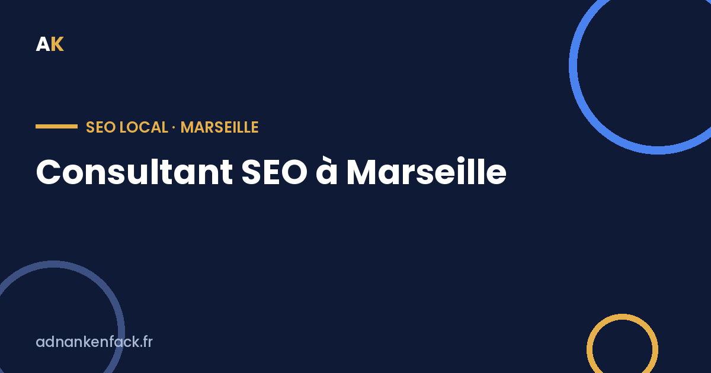
SEO LOCALConsultant SEO à Marseille
Référencement naturel à Marseille : gagne en visibilité sur Google dans la deuxième ville de France.
Voir la page →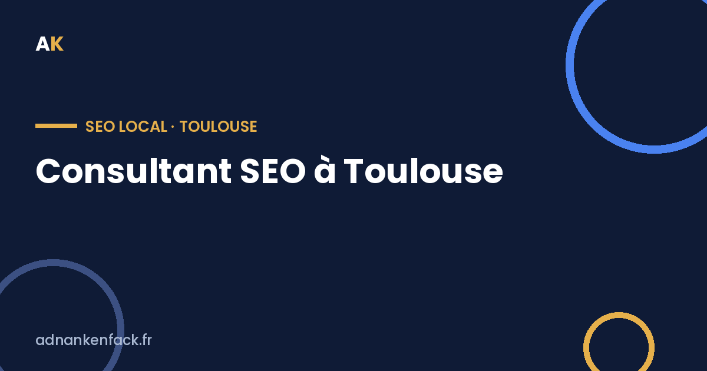
SEO LOCALConsultant SEO à Toulouse
Référencement naturel à Toulouse : gagne en visibilité sur Google dans la Ville rose, terre d'aéronautique et de tech.
Voir la page →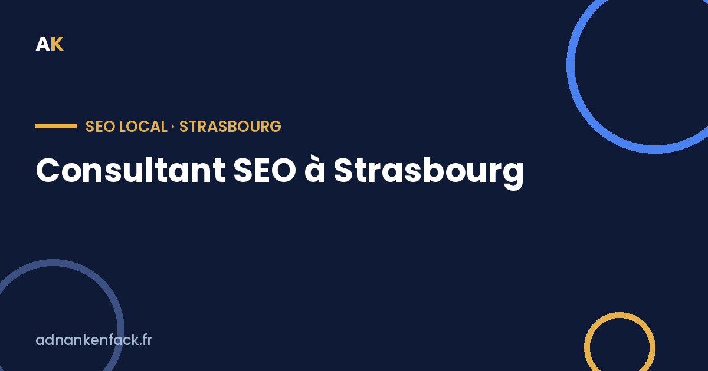
SEO LOCALConsultant SEO à Strasbourg
Référencement naturel à Strasbourg : gagne en visibilité sur Google en Alsace et sur le marché transfrontalier FR/DE.
Voir la page →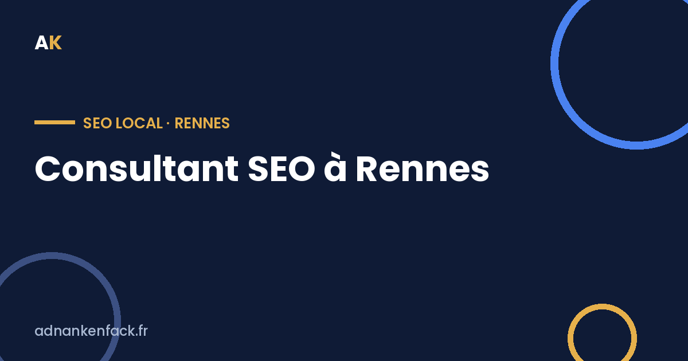
SEO LOCALConsultant SEO à Rennes
Référencement naturel à Rennes : gagne en visibilité sur Google dans la capitale bretonne, pôle numérique majeur.
Voir la page →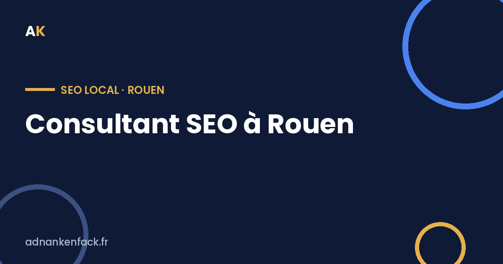
SEO LOCALConsultant SEO à Rouen
Référencement naturel à Rouen : gagne en visibilité sur Google en Normandie, à proximité de Paris.
Voir la page →